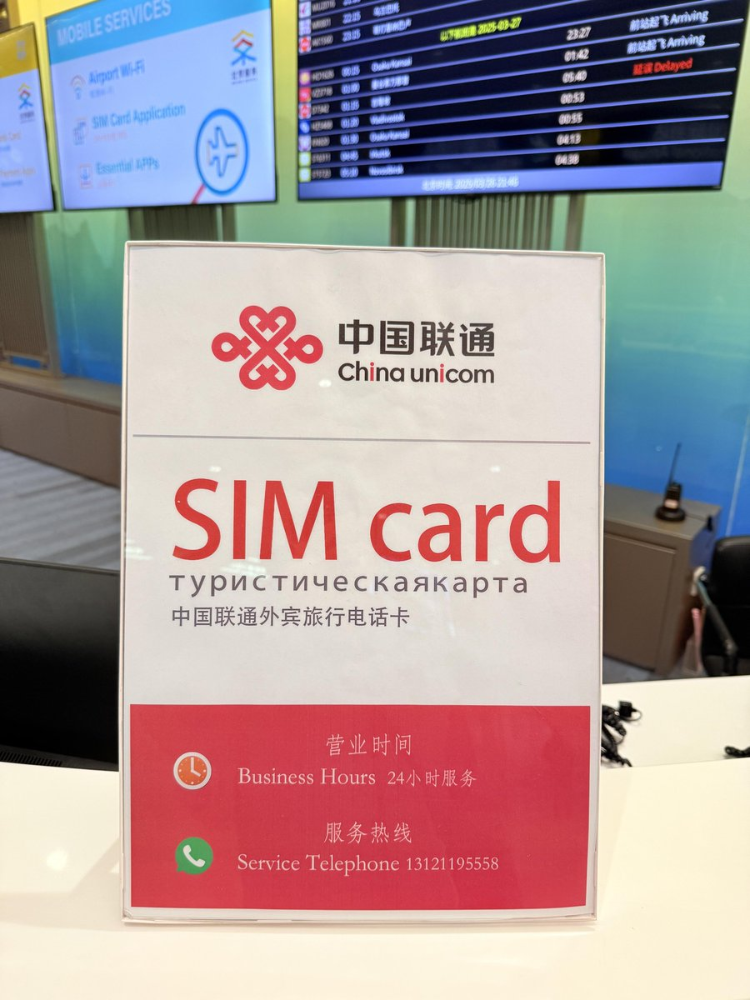
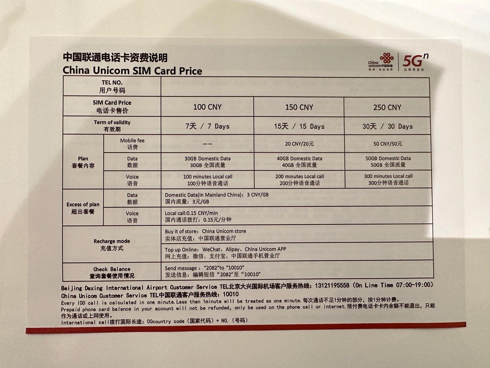
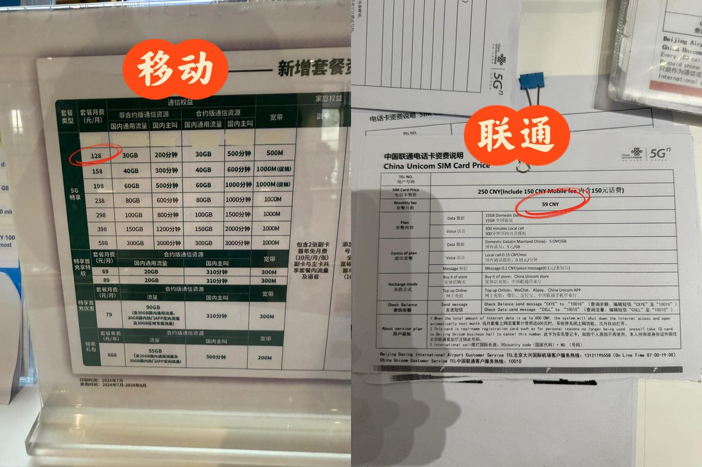
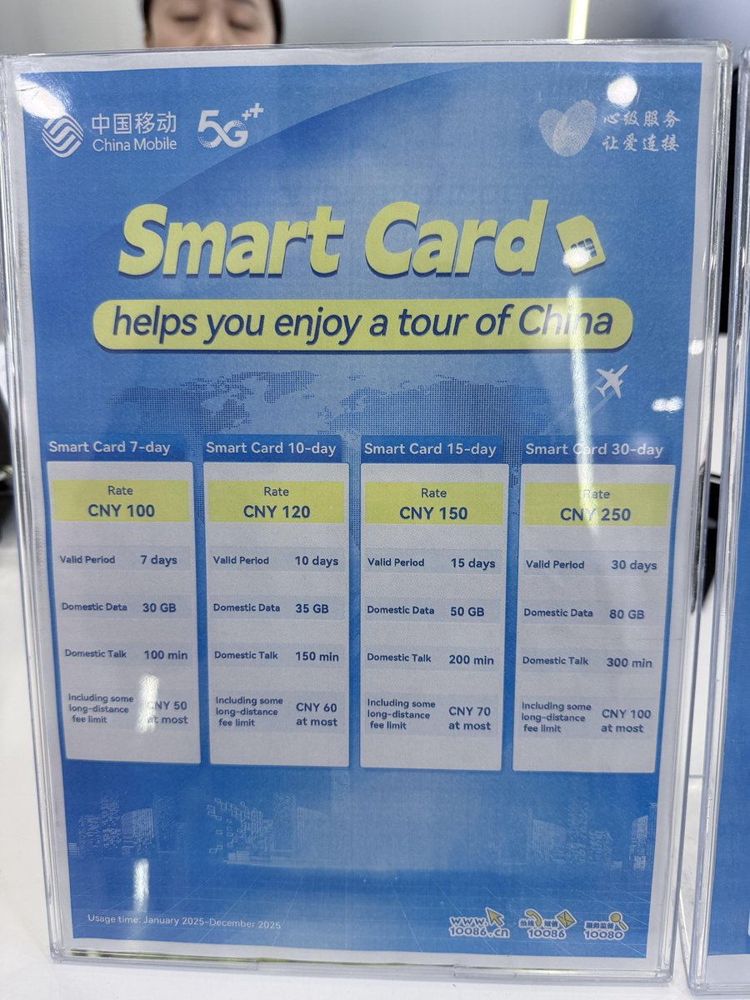
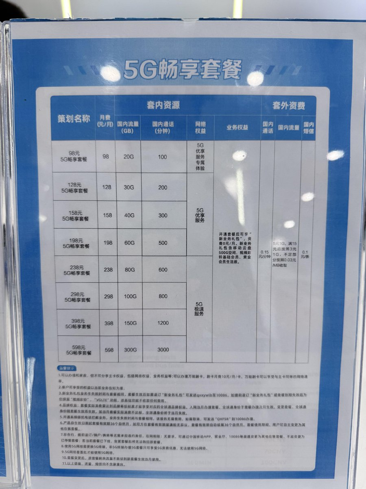

北京大兴机场一层的中国联通也是24小时服务，仅限外籍旅客购买短期SIM卡，但提供GSMA标准的eSIM
零月租，到期自动销户，最长的30天和移动一样是250元，内含50元话费，可打300分钟电话50GB全国流量（不含港澳台），数据上网与正常的北京联通上网卡没区别，到其他省就是当地的IP属地（拜访地漫游）
两家均提供长期SIM卡，分别是移动128和联通59，在价格上也并不是太划算，不如找个中国朋友过户29大流量卡，只是护照得去营业厅走不了线上
短期旅游，应该没有外宾会选择这种号卡，我认识的外国朋友都是拿自己国家的运营商漫游服务，或是在Airalo、Saily等平台先购买好eSIM套餐开数据漫游的，还省得在中国境内开VPN的烦恼
当然有需求必定有市场，除非是让内地人开好后过户，一个人生地不熟的老外来华，也没认识的中国朋友、怕被坑、没渠道，能最低成本获得中国内地号（+86）的方法就只有这个了，也算是体验到GFW的威力了

零月租，到期自动销户，最长的30天和移动一样是250元，内含50元话费，可打300分钟电话50GB全国流量（不含港澳台），数据上网与正常的北京联通上网卡没区别，到其他省就是当地的IP属地（拜访地漫游）
两家均提供长期SIM卡，分别是移动128和联通59，在价格上也并不是太划算，不如找个中国朋友过户29大流量卡，只是护照得去营业厅走不了线上
短期旅游，应该没有外宾会选择这种号卡，我认识的外国朋友都是拿自己国家的运营商漫游服务，或是在Airalo、Saily等平台先购买好eSIM套餐开数据漫游的，还省得在中国境内开VPN的烦恼
当然有需求必定有市场，除非是让内地人开好后过户，一个人生地不熟的老外来华，也没认识的中国朋友、怕被坑、没渠道，能最低成本获得中国内地号（+86）的方法就只有这个了，也算是体验到GFW的威力了





据xhs用户真的酷925透露，北京大兴机场航站楼一层的移动营业厅仅可办外籍人士中国移动实体SIM卡，短期和长期的都可以，不提供eSIM
短期套餐还带花费，最长的30天仅需250元，其中包含100元话费，可达300分钟电话、80GB流量，并且使用的网络还带GFW贴心服务 https://t.co/pb4HqgkI3P
短期套餐还带花费，最长的30天仅需250元，其中包含100元话费，可达300分钟电话、80GB流量，并且使用的网络还带GFW贴心服务 https://t.co/pb4HqgkI3P